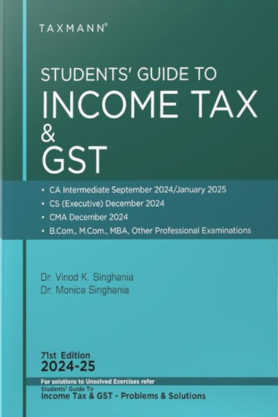

Taxation

1. Structure and Content
The book is organized into comprehensive sections that cover various aspects of taxation in India. Key topics typically include:
Introduction to Taxation:
Understanding the concept of taxation and its importance in the economy.
Types of taxes (direct and indirect) and their features.
Income Tax:
Basic concepts such as residential status, total income, and tax computation.
Detailed analysis of different heads of income:
Salaries
House Property
Capital Gains
Income from Other Sources
Profits and Gains of Business or Profession
Deductions and Exemptions:
Understanding various deductions available under Section 80C to 80U.
Exemptions related to income tax.
Assessment Procedures:
Explanation of tax assessment procedures, including filing returns and the roles of different authorities.
Overview of tax audits and assessments.
Goods and Services Tax (GST):
Comprehensive coverage of GST, including its structure, principles, and implications for businesses.
Understanding the process of registration, returns, and compliance under GST.
Tax Planning and Management:
Importance of tax planning and strategies for minimizing tax liabilities.
Impact of tax policies on business decisions and personal finances.
International Taxation:
Overview of transfer pricing, double taxation avoidance agreements (DTAA), and international taxation issues.
Practical Problems:
Real-world case studies and practical problems related to various taxation scenarios.
2. Writing Style and Approach
Clarity and Accessibility:
The authors write in a clear and engaging manner, making complex taxation concepts easier to understand.
Real-World Examples:
The book uses practical examples and case studies to illustrate the application of tax laws.
Detailed Explanations:
Each topic is explained thoroughly, ensuring that students grasp both theoretical and practical aspects of taxation.
3. Key Features
Comprehensive Coverage:
Covers all essential aspects of income tax and GST, ensuring a well-rounded understanding of taxation.
Latest Updates: The book is regularly updated to reflect changes in tax laws and regulations, including budget updates and amendments.
Self-Contained Resource:
Designed to be a standalone resource for students preparing for CA and other professional exams.
4. Educational Tools
Chapter Summaries:
Summaries at the end of each chapter highlight key concepts and provisions for quick review.
Illustrative Problems:
Numerous illustrative problems and exercises help students apply their knowledge practically.
Practice Questions:
Each chapter typically concludes with practice questions to test understanding and reinforce learning.
5. Strengths
Authoritative Resource:
Written by renowned authors in the field of taxation, making it a trusted source for students and professionals alike.
User-Friendly Layout:
The book is well-organized and easy to navigate, facilitating efficient learning.
Practical Application: Focuses on real-world applications of tax laws, preparing students for professional challenges.
6. Criticism
Complexity for Beginners:
Some beginners might find certain sections complex and may need supplementary materials to fully grasp the concepts.
Depth of Coverage:
Advanced students may seek more in-depth discussions on specialized tax topics.
Why It’s a Good Choice
Exam Preparation: Well-aligned with the CA syllabus and other professional courses, making it a suitable resource for exam preparation.
Practical Relevance: The emphasis on practical applications helps students understand the implications of tax laws on personal and business finances.
Comprehensive Understanding: Provides a thorough grounding in both direct and indirect taxes, essential for anyone pursuing a career in accounting or finance.